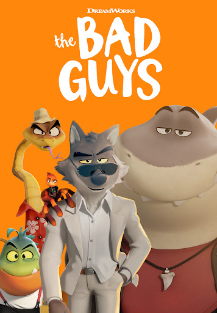
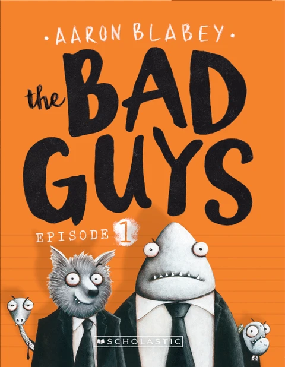
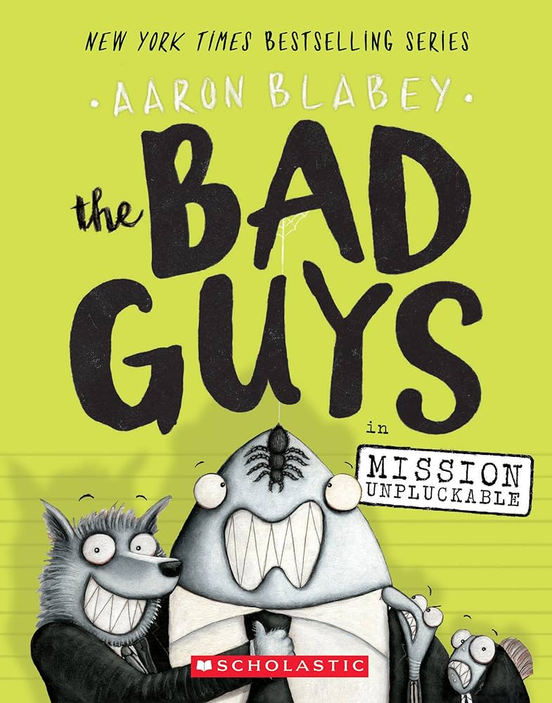
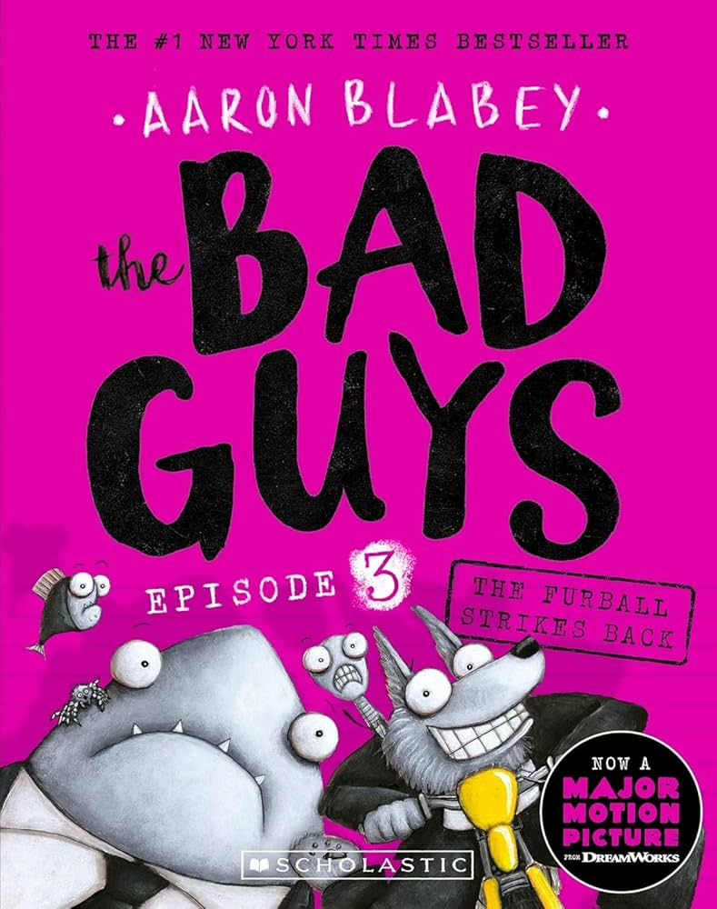
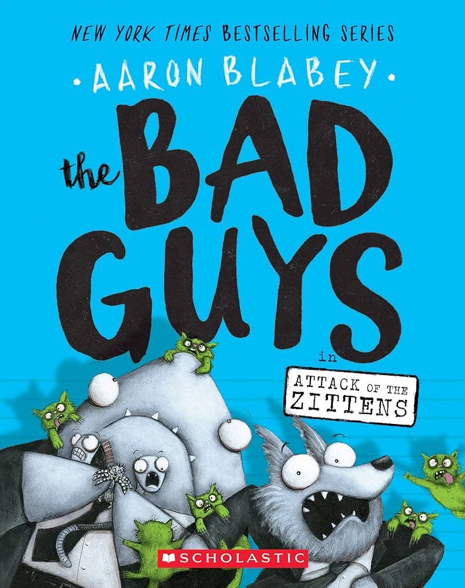

The Bad Guys is a 2022 American animated heist comedy film loosely based on The Bad Guys children's book series by Aaron Blabey, and produced by DreamWorks Animation. The film was directed by Pierre Perifel, written by Etan Cohen, and stars the voices of Sam Rockwell, Marc Maron, Awkwafina, Craig Robinson, Anthony Ramos, Richard Ayoade, Zazie Beetz, Alex Borstein, and Lilly Singh. It tells the story of a criminal group of anthropomorphic animals who, upon being caught, pretend to attempt to reform themselves as model citizens, only for their leader to find himself genuinely drawn to changing his ways for good.

In a world where humans and anthropomorphic animals co-exist, master pickpocket Mr. Wolf leads the Bad Guys, an infamous gang of criminals consisting of his best friend and safecracker Mr. Snake, expert hacker Ms. Tarantula "Webs", master of disguise Mr. Shark, and loose cannon Mr. Piranha. After yet another brazen robbery and police chase, Governor Diane Foxington insults the gang's predictability. Wolf convinces them to steal the Golden Dolphin award, which will be presented to guinea pig philanthropist Professor Rupert Marmalade IV, who has helped rebuild the city from damage by a meteorite. Infiltrating the awards ceremony, Wolf feels a sense of accomplishment after inadvertently assisting an elderly woman, but his conflicted feelings delay the gang's escape, ultimately leading to their arrest. To avoid prison and reclaim the award, Wolf persuades Diane to let Marmalade reform the Bad Guys' criminal ways. Marmalade's efforts to reform the gang are unsuccessful, culminating in a disastrous attempt to rescue guinea pigs from a research lab. Diane angrily scolds them for their "behaviour" and nearly calls off the experiment, but sympathizes with Wolf for acting like the "big bad villain" society expects of him. Wolf finds himself rescuing a cat from a tree, captured by Marmalade in a video that turns the gang's public image around, but Snake fears that Wolf is losing sight of their plan. At Marmalade's charity gala, the gang executes another heist to steal the award. Wolf, having fallen in love with Diane, is unable to do it and decides to redeem himself. However, the meteorite is stolen instead, and the gang is blamed and arrested, while a remorseful Wolf gives Diane the location of the gang's hideout full of stolen loot. Marmalade reveals to the gang that he stole the meteorite and arranged everything to frame them, including posing as the old woman at the awards ceremony. Wolf lashes out angrily at Marmalade, out loud in front of the audience, including Diane. In prison, Wolf explains that he believes a better life is possible, leading to a fight with Snake, who is convinced that society will never accept them. The gang is rescued by Diane, whom Wolf realizes is the Crimson Paw, a former criminal mastermind and now convinced that Wolf is truly redeemed. Wolf agrees to help Diane stop Marmalade from using the meteorite as a hypnotic power source, but the others return to their hideout only to discover their loot is gone. Snake comforts Shark by giving him the last Push Pop, leading them all to realize that Wolf was right about a better life, but an angry Snake storms off in denial to ally with Marmalade. Diane and Wolf realize Marmalade is using the meteorite to control an army of guinea pigs, which he sends to rob his charity funds throughout the city. Diane reveals that when she tried to steal the Golden Dolphin, she realized she was the type of person that society perceived her to be, and left her criminal ways behind. Attempting to steal back the meteorite, Marmalade and Snake capture them. Webs, Shark, and Piranha arrive to rescue them, and together, they race to deliver the meteorite to the police but decide to bring Snake back first. Chased by the guinea pig swarm, Wolf is forced to surrender the meteorite when Marmalade kicks Snake out of his helicopter. Reconciling with Snake, the police confront the gang, while Marmalade's mind control device is destroyed. Before Diane can defend the gang by revealing her criminal past, Wolf and the others willingly turn themselves in. Marmalade tries to claim credit for recovering the meteorite, but Snake reveals that he faked his defection and had the meteorite swapped with Marmalade's replica lamp when he had the mind control device. The machine destroys the meteorite, exposing Marmalade as the real thief, while he inadvertently frames himself as the Crimson Paw after a diamond he took from Diane falls out of his pocket, leading to his arrest. As the police take the Bad Guys to jail, Wolf reveals that he left the Push Pop to prove there was good in Snake, and the gang happily accepts that they are no longer bad guys.
Sam Rockwell as Mr. Wolf, a witty, charming, pickpocket wolf and the leader of "The Bad Guys" gang, who also acts as the gang's getaway driver
Marc Maron as Mr. Snake, a grouchy, cynical safe-cracking snake and Wolf's second-in-command, as well as his best friend
Awkwafina as Ms. Tarantula, a sharp-tongued, sarcastic tarantula and expert hacker also known as "Webs"
Craig Robinson as Mr. Shark, a childish, sensitive great white shark and master of disguise
Anthony Ramos as Mr. Piranha, a short-fused, loose-cannon piranha and the "muscle" of the gang
Richard Ayoade as Professor Marmalade, a wealthy, British-accented, guinea pig philanthropist and scientist who mentors Wolf's group with doing "good deeds", but is secretly an evil and greedy individual, intending to steal from his own charity
Zazie Beetz as Diane Foxington (a.k.a. The Crimson Paw), a red fox serving as the state governor and former master thief-turned-good, and Wolf's love interest
Alex Borstein as Misty Luggins, the hot-tempered human chief of police who is determined to arrest The Bad Guys at any cost
Lilly Singh as Tiffany Fluffit, a local human news reporter with the tendency to exaggerate her reports



